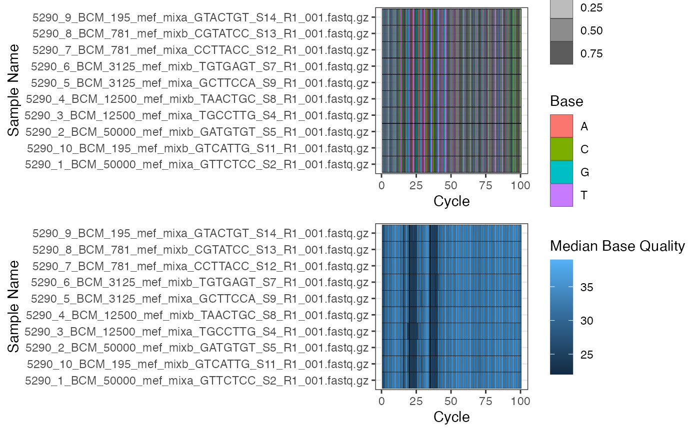
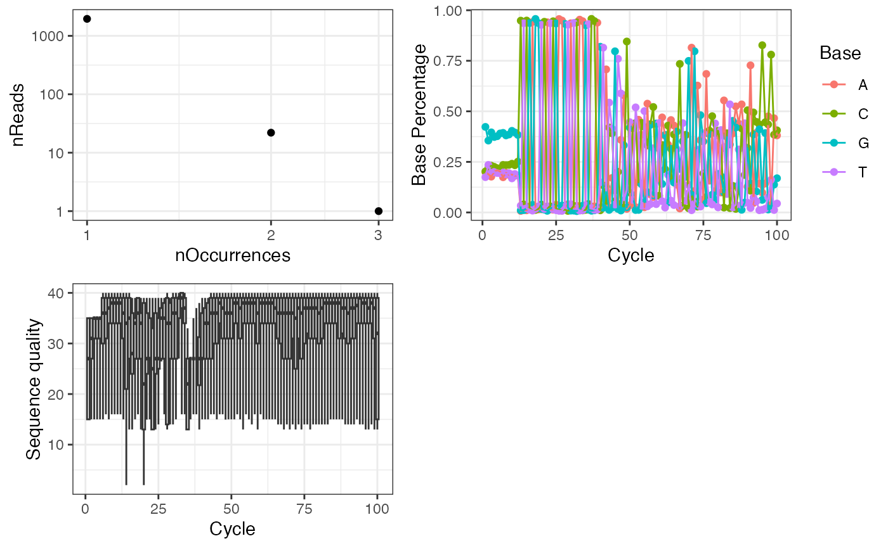
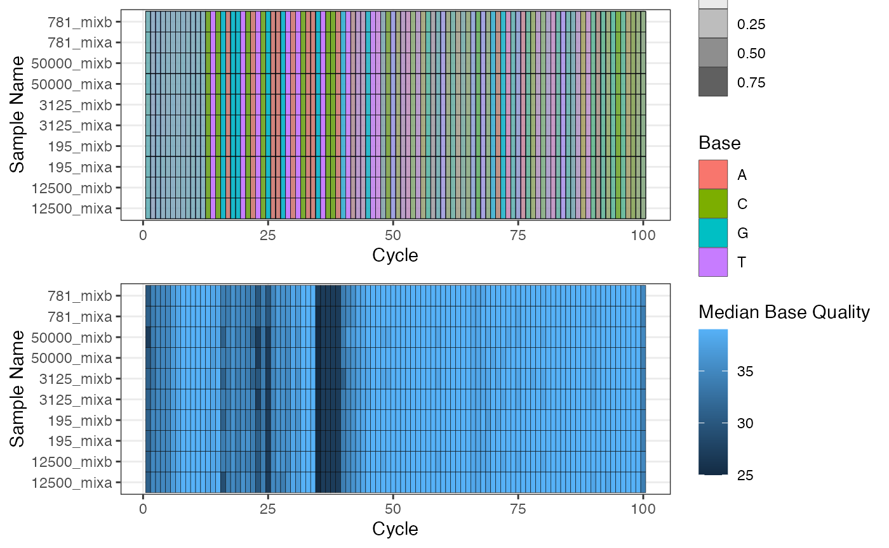
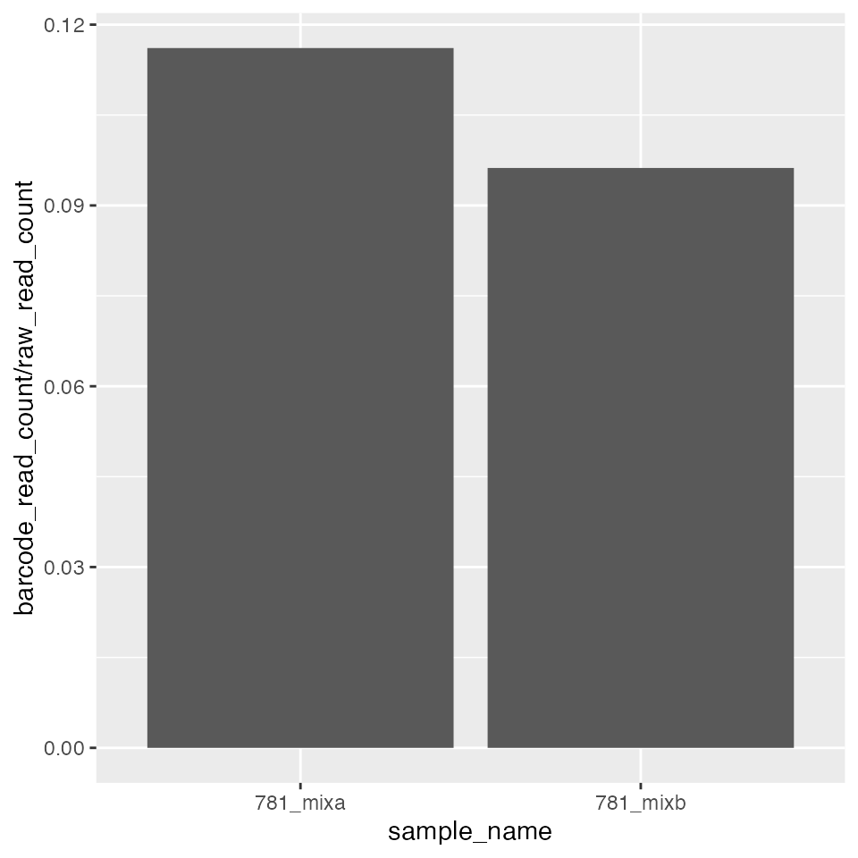
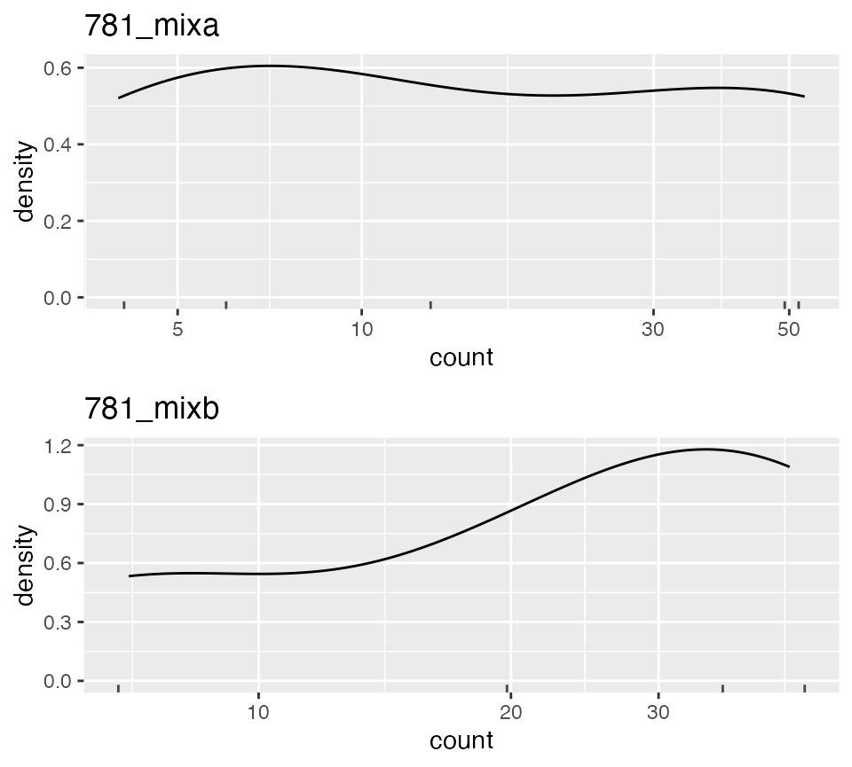
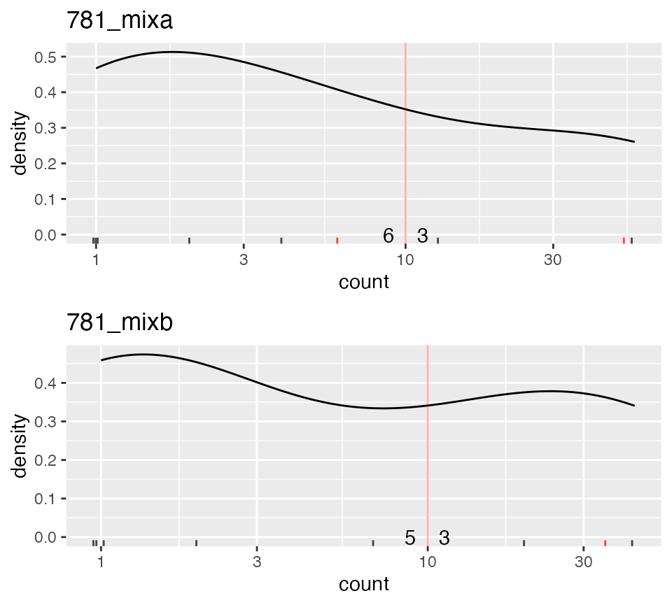
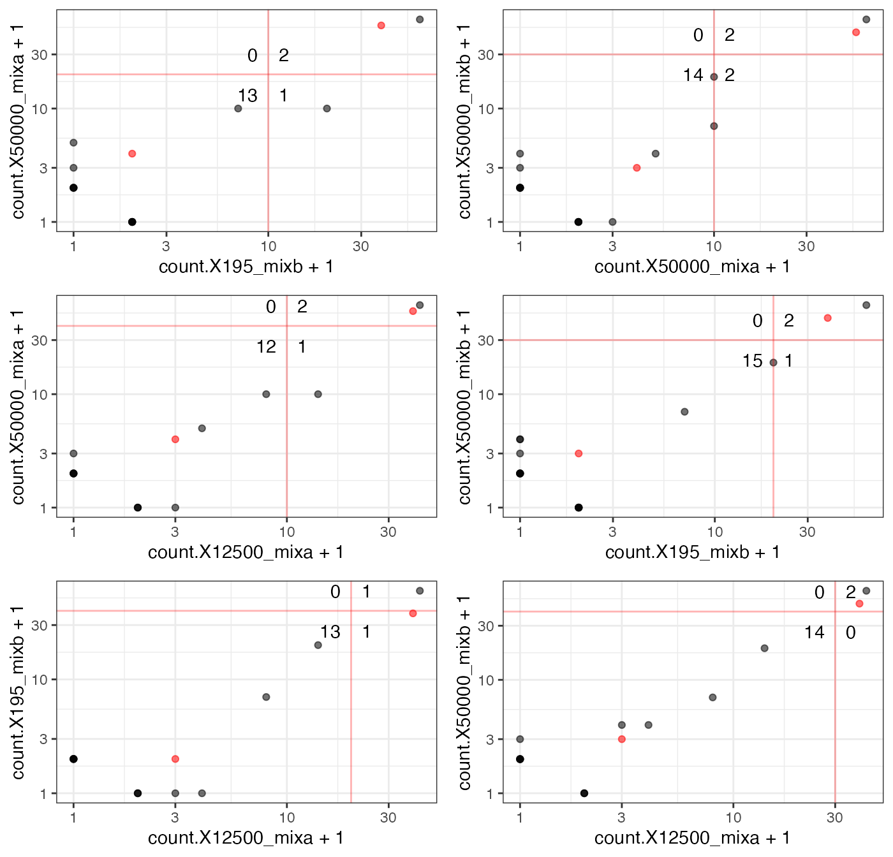
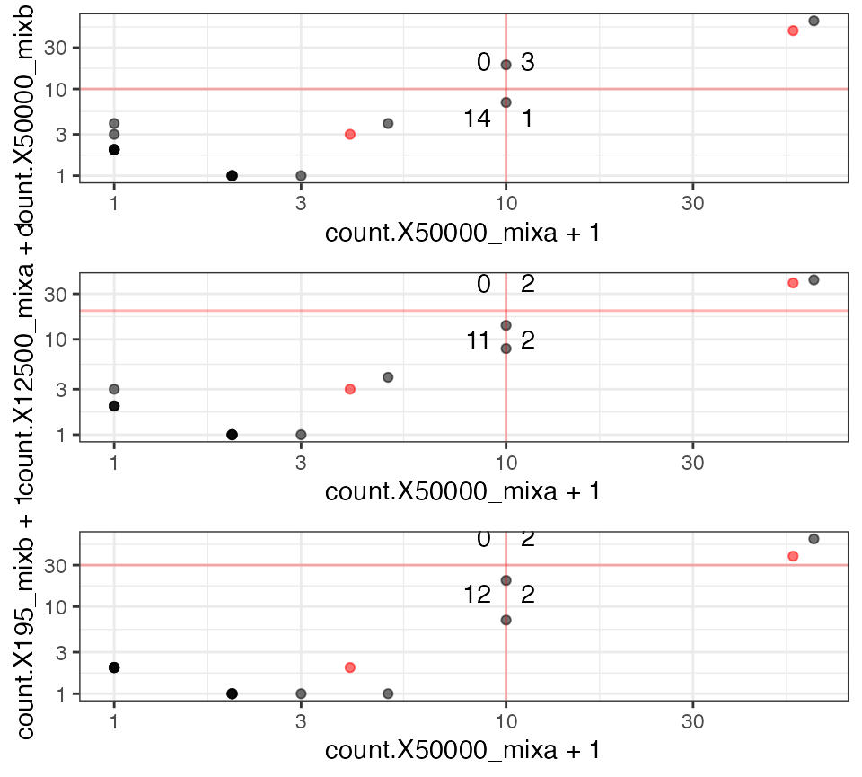

UMI_VDJ_Barcode.Rmd
library(data.table)
library(ggplot2)
library(CellBarcode)What’s this package used for?
Cellular DNA barcoding (genetic lineage tracing) is a powerful tool for lineage tracing and clonal tracking studies. This package provides a toolbox for DNA barcode analysis, from extraction from fastq files to barcode error correction and quantification.
What types of barcode can this package handle?
The package can handle all kinds of barcodes, as long as the barcodes have a pattern which can be matched by a regular expression, and each barcode is within a single sequencing read. It can handle barcodes with flexible length, and barcodes with UMI (unique molecular identifier).
This tool can also be used for the pre-processing part of amplicon data analysis such as CRISPR gRNA screening, immune repertoire sequencing and meta genome data.
What can the package do?
The package provides functions for 1). Sequence quality control and filtering, 2). Barcode (and UMI) extraction from sequencing reads, 3). Sample and barcode management with metadata, 4). Barcode filtering.
Most of the functions in this packages have names with
bc_ as initiation. We hope it can facilitate the syntax
auto-complement function of IDE (integrated development toolkit) or
IDE-like tools such as RStudio, R-NVIM (in VIM), and ESS (in Emacs). By
typing bc_ you can have a list of suggested functions, then
you can pick the function you need from the list.
TODO: the function brain-map
The test data set in this package can be accessed by
system.file("extdata", "mef_test_data", package="CellBarcode")The data are from Jos et. al (TODO: citation). There are 7 mouse embryo fibroblast (MEF) lines with different DNA barcodes. The barcodes are in vivo inducible VDJ barcodes (TODO: add citation when have). These MEF lines were mixed in a ratio of 1:2:4:8:16:32:64.
| sequence | clone size 2^x |
|---|---|
| AAGTCCAGTTCTACTATCGTAGCTACTA | 1 |
| AAGTCCAGTATCGTTACGCTACTA | 2 |
| AAGTCCAGTCTACTATCGTTACGACAGCTACTA | 3 |
| AAGTCCAGTTCTACTATCGTTACGAGCTACTA | 4 |
| AAGTCCATCGTAGCTACTA | 5 |
| AAGTCCAGTACTGTAGCTACTA | 6 |
| AAGTCCAGTACTATCGTACTA | 7 |
Then 5 pools of 196 to 50000 cells were prepared from the MEF lines mixture. For each pool 2 technical replicates (NGS libraries) were prepared and sequenced, finally resulting in 10 samples.
| sample name | cell number | replication |
|---|---|---|
| 195_mixa | 195 | mixa |
| 195_mixb | 195 | mixb |
| 781_mixa | 781 | mixa |
| 781_mixb | 781 | mixb |
| 3125_mixa | 3125 | mixa |
| 3125_mixb | 3125 | mixb |
| 12500_mixa | 12500 | mixa |
| 12500_mixb | 12500 | mixb |
| 50000_mixa | 50000 | mixa |
| 50000_mixb | 50000 | mixb |
The original FASTQ files are relatively large, so only 2000 reads for each sample have been randomly sampled as a test set here.
example_data <- system.file("extdata", "mef_test_data", package = "CellBarcode")
fq_files <- dir(example_data, "fastq.gz", full=TRUE)
# prepare metadata for the samples
metadata <- stringr::str_split_fixed(basename(fq_files), "_", 10)[, c(4, 6)]
metadata <- as.data.frame(metadata)
sample_name <- apply(metadata, 1, paste, collapse = "_")
colnames(metadata) = c("cell_number", "replication")
# metadata should has the row names consistent to the sample names
rownames(metadata) = sample_name
metadata
#> cell_number replication
#> 50000_mixa 50000 mixa
#> 195_mixb 195 mixb
#> 50000_mixb 50000 mixb
#> 12500_mixa 12500 mixa
#> 12500_mixb 12500 mixb
#> 3125_mixa 3125 mixa
#> 3125_mixb 3125 mixb
#> 781_mixa 781 mixa
#> 781_mixb 781 mixb
#> 195_mixa 195 mixaInstall from Bioconductor.
if(!requireNamespace("BiocManager", quietly = TRUE))
install.packages("BiocManager")
BiocManager::install("CellBarcode")Install the development version from Github.
# install.packages("remotes")
remotes::install_github("wenjie1991/CellBarcode")Here is an example of a basic workflow:
# install.packages("stringr")
library(CellBarcode)
library(magrittr)
# The example data is the mix of MEF lines with known barcodes
# 2000 reads for each file have been sampled for this test dataset
# extract UMI barcode with regular expression
bc_obj <- bc_extract(
fq_files, # fastq file
pattern = "([ACGT]{12})CTCGAGGTCATCGAAGTATC([ACGT]+)CCGTAGCAAGCTCGAGAGTAGACCTACT",
pattern_type = c("UMI" = 1, "barcode" = 2),
sample_name = sample_name,
metadata = metadata
)
bc_obj
#> Bonjour le monde, This is a BarcodeObj.
#> ----------
#> It contains:
#> ----------
#> @metadata: 4 field(s) available:
#> cell_number replication raw_read_count barcode_read_count
#> ----------
#> @messyBc: 10 sample(s) for raw barcodes:
#> In sample $50000_mixa there are: 1310 Tags
#> In sample $195_mixb there are: 1318 Tags
#> In sample $50000_mixb there are: 1385 Tags
#> In sample $12500_mixa there are: 1321 Tags
#> In sample $12500_mixb there are: 1361 Tags
#> In sample $3125_mixa there are: 1287 Tags
#> In sample $3125_mixb there are: 1297 Tags
#> In sample $781_mixa there are: 1295 Tags
#> In sample $781_mixb there are: 1303 Tags
#> In sample $195_mixa there are: 1343 Tags
# sample subset operation, select technical repeats 'mixa'
bc_sub = bc_subset(bc_obj, sample=replication == "mixa")
bc_sub
#> Bonjour le monde, This is a BarcodeObj.
#> ----------
#> It contains:
#> ----------
#> @metadata: 4 field(s) available:
#> cell_number replication raw_read_count barcode_read_count
#> ----------
#> @messyBc: 5 sample(s) for raw barcodes:
#> In sample $50000_mixa there are: 1310 Tags
#> In sample $12500_mixa there are: 1321 Tags
#> In sample $3125_mixa there are: 1287 Tags
#> In sample $781_mixa there are: 1295 Tags
#> In sample $195_mixa there are: 1343 Tags
# filter the barcode, UMI barcode amplicon >= 2 & UMI counts >= 2
bc_sub <- bc_cure_umi(bc_sub, depth = 2) %>% bc_cure_depth(depth = 2)
# select barcodes with a white list
bc_2df(bc_sub)
#> sample_name barcode_seq count
#> 1 50000_mixa AAGTCCAGTATCGTTACGCTACTA 10
#> 2 50000_mixa AAGTCCAGTACTGTAGCTACTA 11
#> 3 50000_mixa AAGTCCATCGTAGCTACTA 3
#> 4 12500_mixa AAGTCCAGTACTGTAGCTACTA 11
#> 5 12500_mixa AAGTCCAGTATCGTTACGCTACTA 20
#> 6 12500_mixa AAGTCCATCGTAGCTACTA 4
#> 7 12500_mixa AAGTCCAGTTCTACTATCGTTACGAGCTACTA 3
#> 8 3125_mixa AAGTCCATCGTAGCTACTA 7
#> 9 3125_mixa AAGTCCAGTATCGTTACGCTACTA 17
#> 10 3125_mixa AAGTCCAGTTCTACTATCGTTACGAGCTACTA 7
#> 11 3125_mixa AAGTCCAGTACTGTAGCTACTA 9
#> 12 781_mixa AAGTCCAGTATCGTTACGCTACTA 7
#> 13 781_mixa AAGTCCAGTACTGTAGCTACTA 9
#> 14 781_mixa AAGTCCATCGTAGCTACTA 2
#> 15 195_mixa AAGTCCATCGTAGCTACTA 9
#> 16 195_mixa AAGTCCAGTACTGTAGCTACTA 11
#> 17 195_mixa AAGTCCAGTATCGTTACGCTACTA 12
#> 18 195_mixa AAGTCCAGTTCTACTATCGTTACGAGCTACTA 4
#> 19 195_mixa AAGTCCAGTACTATCGTACTA 2
bc_sub[c("AAGTCCAGTACTATCGTACTA", "AAGTCCAGTACTGTAGCTACTA"), ]
#> Bonjour le monde, This is a BarcodeObj.
#> ----------
#> It contains:
#> ----------
#> @metadata: 5 field(s) available:
#> cell_number replication raw_read_count barcode_read_count depth_cutoff
#> ----------
#> @messyBc: 5 sample(s) for raw barcodes:
#> In sample $50000_mixa there are: 434 Tags
#> In sample $12500_mixa there are: 490 Tags
#> In sample $3125_mixa there are: 455 Tags
#> In sample $781_mixa there are: 524 Tags
#> In sample $195_mixa there are: 484 Tags
#> ----------
#> @cleanBc: 5 samples for cleaned barcodes
#> In sample $50000_mixa there are: 1 barcodes
#> In sample $12500_mixa there are: 1 barcodes
#> In sample $3125_mixa there are: 1 barcodes
#> In sample $781_mixa there are: 1 barcodes
#> In sample $195_mixa there are: 2 barcodes
# export the barcode counts to data.frame
head(bc_2df(bc_sub))
#> sample_name barcode_seq count
#> 1 50000_mixa AAGTCCAGTATCGTTACGCTACTA 10
#> 2 50000_mixa AAGTCCAGTACTGTAGCTACTA 11
#> 3 50000_mixa AAGTCCATCGTAGCTACTA 3
#> 4 12500_mixa AAGTCCAGTACTGTAGCTACTA 11
#> 5 12500_mixa AAGTCCAGTATCGTTACGCTACTA 20
#> 6 12500_mixa AAGTCCATCGTAGCTACTA 4
# export the barcode counts to matrix
head(bc_2matrix(bc_sub))
#> X12500_mixa X195_mixa X3125_mixa X50000_mixa
#> AAGTCCAGTACTATCGTACTA 0 2 0 0
#> AAGTCCAGTACTGTAGCTACTA 11 11 9 11
#> AAGTCCAGTATCGTTACGCTACTA 20 12 17 10
#> AAGTCCAGTTCTACTATCGTTACGAGCTACTA 3 4 7 0
#> AAGTCCATCGTAGCTACTA 4 9 7 3
#> X781_mixa
#> AAGTCCAGTACTATCGTACTA 0
#> AAGTCCAGTACTGTAGCTACTA 9
#> AAGTCCAGTATCGTTACGCTACTA 7
#> AAGTCCAGTTCTACTATCGTTACGAGCTACTA 0
#> AAGTCCATCGTAGCTACTA 2In a full analysis starting from fastq files, the first step is to
check the seqencing quality and filter as required. The
bc_seq_qc function is for checking the sequencing quality.
If multiple samples are input the output is a BarcodeQcSet
object, otherwise a BarcodeQC object will be returned. In
addition, bc_seq_qc also can handle the
ShortReadQ, DNAStringSet and other data
types.
qc_noFilter <- bc_seq_qc(fq_files)
qc_noFilter
#> The sequence QC set, use `[]` to select sample:
#> 5290_1_BCM_50000_mef_mixa_GTTCTCC_S2_R1_001.fastq.gz
#> 5290_10_BCM_195_mef_mixb_GTCATTG_S11_R1_001.fastq.gz
#> 5290_2_BCM_50000_mef_mixb_GATGTGT_S5_R1_001.fastq.gz
#> 5290_3_BCM_12500_mef_mixa_TGCCTTG_S4_R1_001.fastq.gz
#> 5290_4_BCM_12500_mef_mixb_TAACTGC_S8_R1_001.fastq.gz
#> 5290_5_BCM_3125_mef_mixa_GCTTCCA_S9_R1_001.fastq.gz
#> 5290_6_BCM_3125_mef_mixb_TGTGAGT_S7_R1_001.fastq.gz
#> 5290_7_BCM_781_mef_mixa_CCTTACC_S12_R1_001.fastq.gz
#> 5290_8_BCM_781_mef_mixb_CGTATCC_S13_R1_001.fastq.gz
#> 5290_9_BCM_195_mef_mixa_GTACTGT_S14_R1_001.fastq.gz
bc_names(qc_noFilter)
#> [1] "5290_1_BCM_50000_mef_mixa_GTTCTCC_S2_R1_001.fastq.gz"
#> [2] "5290_10_BCM_195_mef_mixb_GTCATTG_S11_R1_001.fastq.gz"
#> [3] "5290_2_BCM_50000_mef_mixb_GATGTGT_S5_R1_001.fastq.gz"
#> [4] "5290_3_BCM_12500_mef_mixa_TGCCTTG_S4_R1_001.fastq.gz"
#> [5] "5290_4_BCM_12500_mef_mixb_TAACTGC_S8_R1_001.fastq.gz"
#> [6] "5290_5_BCM_3125_mef_mixa_GCTTCCA_S9_R1_001.fastq.gz"
#> [7] "5290_6_BCM_3125_mef_mixb_TGTGAGT_S7_R1_001.fastq.gz"
#> [8] "5290_7_BCM_781_mef_mixa_CCTTACC_S12_R1_001.fastq.gz"
#> [9] "5290_8_BCM_781_mef_mixb_CGTATCC_S13_R1_001.fastq.gz"
#> [10] "5290_9_BCM_195_mef_mixa_GTACTGT_S14_R1_001.fastq.gz"
class(qc_noFilter)
#> [1] "BarcodeQcSet"
#> attr(,"package")
#> [1] "CellBarcode"The bc_plot_seqQc function can be invoked with a
BarcodeQcSet as argument, and the output is a QC summary
with two panels. The first shows the ratio of ATCG bases for each
sequencing cycle with one sample per row; this allows the user to, for
example, identify constant or random parts of the sequencing read. The
second figure shows the average sequencing quality index of each cycle
(base).
For the test set, the first 12 bases are UMI, which are random. This is followed by the constant region of the barcode (the PCR primer selects reads with this sequence), and here we observe a specific base for each cycle across all the samples.
bc_plot_seqQc(qc_noFilter) 
We can also plot one of the BarcodeQc in the
BarcodeQcSet object. In the output, there are three panels.
The top left one shows the reads depth distribution, the top right
figure shows the “ATCG” base ratio by each sequencing cycle, and the
last one shows the sequencing quality by sequencing cycle.
qc_noFilter[1]
#> Sequnece QC, summary:
#> total_read: 2000
#> p5_read_length: 100
#> median_read_length: 100
#> p95_read_length: 100
class(qc_noFilter[1])
#> [1] "BarcodeQc"
#> attr(,"package")
#> [1] "CellBarcode"
bc_plot_seqQc(qc_noFilter[1]) 
bc_seq_filter reads in the sequence data and applies
filters, then returns a ShortReadQ object which contains
the filtered sequences.
The bc_seq_filter function can read fastq files, and it
can also handle sequencing reads in ShortReadQ,
DNAStringSet and data.frame.
The currently available filter parameters are: - min_average_quality: average base sequencing quality across read. - min_read_length: minimum number of bases per read. - N_threshold: maximum number of “N” bases in sequence.
# TODO: output the filtering percentage
# TODO: Trimming
fq_filter <- bc_seq_filter(
fq_files,
min_average_quality = 30,
min_read_length = 60,
sample_name = sample_name)
fq_filter
#> $`50000_mixa`
#> class: ShortReadQ
#> length: 1154 reads; width: 100 cycles
#>
#> $`195_mixb`
#> class: ShortReadQ
#> length: 1187 reads; width: 100 cycles
#>
#> $`50000_mixb`
#> class: ShortReadQ
#> length: 1234 reads; width: 100 cycles
#>
#> $`12500_mixa`
#> class: ShortReadQ
#> length: 1186 reads; width: 100 cycles
#>
#> $`12500_mixb`
#> class: ShortReadQ
#> length: 1238 reads; width: 100 cycles
#>
#> $`3125_mixa`
#> class: ShortReadQ
#> length: 1100 reads; width: 100 cycles
#>
#> $`3125_mixb`
#> class: ShortReadQ
#> length: 1146 reads; width: 100 cycles
#>
#> $`781_mixa`
#> class: ShortReadQ
#> length: 1154 reads; width: 100 cycles
#>
#> $`781_mixb`
#> class: ShortReadQ
#> length: 1164 reads; width: 100 cycles
#>
#> $`195_mixa`
#> class: ShortReadQ
#> length: 1205 reads; width: 100 cycles
bc_plot_seqQc(bc_seq_qc(fq_filter))
One of the core applications of this package is parsing the sequences
to get the barcode (and UMI). Our package uses regular expressions to
identify barcodes (and UMI) from sequencing reads. This is how we tell
bc_extract the structure of the input sequences.
3 arguments are necessary for bc_extract, they are: - x:
the sequence data, it can be in fastq, ShortReadQ,
DNAStringSet or data.frame format. - pattern:
the sequence pattern regular expression. - pattern_type: pattern
description.
The pattern argument is the regular expression, it tells
the function where to find the barcode (or UMI). We capture the barcode
(or UMI) by () in the backbone. For the sequence captured
by (), the pattern_type argument tells which
is the UMI or the barcode. In the example
pattern <- "([ACGA]{12})CTCGAGGTCATCGAAGTATC([ACGT]+)CCGTAGCAAGCTCGAGAGTAGACCTACT"
pattern_type <- c("UMI" = 1, "barcode" = 2)() in the
pattern argument, and corresponds to UMI = 1
in the pattern_type argument.CTCGAGGTCATCGAAGTATC.(), and it is defined by barcode = 2 in the
pattern_type argument.CCGTAGCAAGCTCGAGAGTAGACCTACT.In the regular expression, the UMI pattern is retrieved with
[ACGT]{12}. The [ACGT] means to match “A”,
“C”, “G” or “T”, and the {12} means match 12
[ACGT]. In the barcode pattern [ACGT]+, again
[ACGT] means match “A”, “C”, “G” or “T” and the
+ says to match at least one [ACGT].
The bc_extract function is used to extract the
barcode(s) from the sequences. It returns a BarcodeObj
object if the input is a list or a vector of Fastq files. The
BarcodeObj created by bc_extract is a R S4
class with three slots: messyBc, metadata and
cleanBc (which is NULL in the bc_extract
output). They can be accessed by @ operator or
corresponding accesors: - bc_messyBc: return the
messyBc slot. - bc_cleanBc: return the
cleanBc slot. - bc_meta: return the
metadata slot.
messyBc is a list, where each element is a
data.table corresponding to the successive samples. Each
data.table has 3 columns:
pattern and pattern_type argument.Attention: In the data.table,
barcode_seq value may be not unique, as two different full
read sequences can contain the same barcode sequence, due to the UMI or
mutations in the constant region.
If the input to bc_extract is just a sample, the output
is a single data.frame with the 3 columns 1).
umi_seq, 2). barcode_seq and 3).
count, as described above.
The sequence in match_seq is a contiguous segment of the
full read given in reads_seq. The umi_seq and
barcode_seq are contiguous segments of
match_seq. Take note that, the reads_seq is
the unique id for each row. The match_seq,
umi_seq or barcode_seq can be duplicated, due
to the potential variation in the region outside of
match_seq. Please keep this in mind when you use data in
$messyBc to perform the analysis.
In the following example, only a barcode is extracted.
pattern <- "CTCGAGGTCATCGAAGTATC([ACGT]+)CCGTAGCAAGCTCGAGAGTAGACCTACT"
bc_obj <- bc_extract(
fq_filter,
sample_name = sample_name,
pattern = pattern,
pattern_type = c(barcode = 1))
bc_obj
#> Bonjour le monde, This is a BarcodeObj.
#> ----------
#> It contains:
#> ----------
#> @metadata: 2 field(s) available:
#> raw_read_count barcode_read_count
#> ----------
#> @messyBc: 10 sample(s) for raw barcodes:
#> In sample $50000_mixa there are: 39 Tags
#> In sample $195_mixb there are: 31 Tags
#> In sample $50000_mixb there are: 49 Tags
#> In sample $12500_mixa there are: 37 Tags
#> In sample $12500_mixb there are: 44 Tags
#> In sample $3125_mixa there are: 36 Tags
#> In sample $3125_mixb there are: 44 Tags
#> In sample $781_mixa there are: 34 Tags
#> In sample $781_mixb there are: 29 Tags
#> In sample $195_mixa there are: 34 Tags
names(bc_messyBc(bc_obj)[[1]])
#> [1] "barcode_seq" "count"Here the regular expression matches a constant sequence at the
beginning and the end and the barcode in () matches at
least one of any character.
In the following example, both UMI and barcode are extracted. The regular expression is explained above.
pattern <- "([ACGA]{12})CTCGAGGTCATCGAAGTATC([ACGT]+)CCGTAGCAAGCTCGAGAGTAGACCTACT"
bc_obj_umi <- bc_extract(
fq_filter,
sample_name = sample_name,
pattern = pattern,
maxLDist = 0,
pattern_type = c(UMI = 1, barcode = 2))
class(bc_obj_umi)
#> [1] "BarcodeObj"
#> attr(,"package")
#> [1] "CellBarcode"
bc_obj_umi
#> Bonjour le monde, This is a BarcodeObj.
#> ----------
#> It contains:
#> ----------
#> @metadata: 2 field(s) available:
#> raw_read_count barcode_read_count
#> ----------
#> @messyBc: 10 sample(s) for raw barcodes:
#> In sample $50000_mixa there are: 142 Tags
#> In sample $195_mixb there are: 127 Tags
#> In sample $50000_mixb there are: 143 Tags
#> In sample $12500_mixa there are: 106 Tags
#> In sample $12500_mixb there are: 134 Tags
#> In sample $3125_mixa there are: 106 Tags
#> In sample $3125_mixb there are: 120 Tags
#> In sample $781_mixa there are: 131 Tags
#> In sample $781_mixb there are: 112 Tags
#> In sample $195_mixa there are: 154 Tagsbc_extract added two columns named “row_read_count” and
“barcode_read_count” to the metadata slot of the returned BarcodeObj
object.
row_read_count: Total raw reads number of each sample. barcode_read_count: The number of reads that contain the barcodes.
You can use the ratio of barcode_read_count versus
raw_read_count to check the successfulness of the
sequencing or correctness of the pattern given to the
bc_extract.
# select two samples from bc_obj_umi
bc_obj_umi_sub <- bc_obj_umi[, c("781_mixa", "781_mixb")]
# get the metadata matrix
(d <- bc_meta(bc_obj_umi_sub))
#> raw_read_count barcode_read_count
#> 781_mixa 1154 134
#> 781_mixb 1164 112
# use the row name of the metadata, which contains the sample names
d$sample_name <- rownames(d)
d$barcode_read_count / d$raw_read_count
#> [1] 0.11611785 0.09621993
# visualize
ggplot(d) +
aes(x=sample_name, y=barcode_read_count / raw_read_count) +
geom_bar(stat="identity")
Besides, we provide operators to handle the barcodes and samples in
BarcodeObj object. You can easily select one or several
samples by their names, indices or metadata.
Select slot by accesors:
# Access messyBc slot
head(bc_messyBc(bc_obj_umi)[[1]], n=2)
#> umi_seq barcode_seq count
#> 1 GGACAGAGCGGA AAGTCCAGTATCGTTACGCTACTA 2
#> 2 GGCCGGCGGGGC AAGTCCAGTACTGTAGCTACTA 2
# return a data.frame
head(bc_messyBc(bc_obj_umi, isList=FALSE), n=2)
#> sample_name umi_seq barcode_seq count
#> 1: 50000_mixa GGACAGAGCGGA AAGTCCAGTATCGTTACGCTACTA 2
#> 2: 50000_mixa GGCCGGCGGGGC AAGTCCAGTACTGTAGCTACTA 2
# Access cleanBc slot
# return a data.frame
head(bc_cleanBc(bc_obj_umi, isList=FALSE), n=2)
#> sample_nmae umi_seq barcode_seq count
#> 1: 50000_mixa GGACAGAGCGGA AAGTCCAGTATCGTTACGCTACTA 2
#> 2: 50000_mixa GGCCGGCGGGGC AAGTCCAGTACTGTAGCTACTA 2Select sample by sample names
bc_obj_umi_sub <- bc_obj_umi[, c("781_mixa", "781_mixb")]
bc_names(bc_obj_umi_sub)
#> [1] "781_mixa" "781_mixb"Set metadata
bc_meta(bc_obj_umi_sub)$rep <- c("a", "b")
bc_meta(bc_obj_umi_sub)
#> raw_read_count barcode_read_count rep
#> 781_mixa 1154 134 a
#> 781_mixb 1164 112 bSelect sample by metadata
bc_subset(bc_obj_umi_sub, sample = rep == "a")
#> Bonjour le monde, This is a BarcodeObj.
#> ----------
#> It contains:
#> ----------
#> @metadata: 3 field(s) available:
#> raw_read_count barcode_read_count rep
#> ----------
#> @messyBc: 1 sample(s) for raw barcodes:
#> In sample $781_mixa there are: 131 TagsMost of the times, it needs PCR and NGS to read out the cellular
barcode sequences. bc_extract will output all barcodes
found in the sequences. Some of the identified barcodes may contain PCR
or sequencing errors.
The potential errors derived from PCR and NGS lead to spurious barcodes that not existed in biological samples. The spurious barcodes are more likely to be less abundant comparing to corresponding “mother” barcodes they derived from.
As UMI can be used to label a DNA molecular, one UMI labeled barcode molecular becomes multiple copies by PCR. Thus all the sequences derived from the template sequence, including original template sequence and mutant ones, are marked by UMI for having the same UMI. The original template sequence is likely having more reads comparing to the spurious one derived from PCR or sequencing mutation, as errors happens with low probability. Also, a barcode sequence is less likely to be spurious one when it relates to several UMIs.
We created the bc_cure_* functions to perform filtering
for removing the potential spurious barcodes. The bc_cure_*
functions create or update the cleanBc slot in
BarcodeObj. The cleanBc slot contains 2
columns - barcode_seq: barcode sequence. - counts: reads count, or UMI
count in the case that the cleanBc was created by
bc_cure_umi.
Important: The createBc slot, the
barcode_seq is not duplicated in each sample.
In the bc_cure_* function family, there are
bc_cure_depth, bc_cure_umi and
bc_cure_cluster.
In the case when the UMI is applied, the template sequence is marked
by UMI, and we use “UMI-barcode tag” to denote a combination of a UMI
and a barcode. The UMI-barcode tag with few reads are likely deriving
from PCR or sequence errors. bc_cure_umi carries out the
filtering based on the UMI-barcode tag read count from the
messyBc slot in BarcodeObj object, and returns a updated
BarcodeObj object with a cleanBc slot containing the
barcodes passing the filtering.
# Filter the barcodes with UMI-barcode tag >= 1,
# and treat UMI as absolute unique and do "fish"
bc_obj_umi_sub <- bc_cure_umi(
bc_obj_umi_sub, depth = 1,
isUniqueUMI = TRUE,
doFish = TRUE)
bc_obj_umi_sub
#> Bonjour le monde, This is a BarcodeObj.
#> ----------
#> It contains:
#> ----------
#> @metadata: 3 field(s) available:
#> raw_read_count barcode_read_count rep
#> ----------
#> @messyBc: 2 sample(s) for raw barcodes:
#> In sample $781_mixa there are: 131 Tags
#> In sample $781_mixb there are: 112 Tags
#> ----------
#> @cleanBc: 2 samples for cleaned barcodes
#> In sample $781_mixa there are: 9 barcodes
#> In sample $781_mixb there are: 8 barcodesThe available arguments of bc_cure_umi are:
bc_cure_depth performs filtering by reads/UMI count. It
can filter the raw barcodes in the messyBc and create a
cleanBc slot , or update the cleanBc when the
argument isUpdate is TRUE. You should set this argument to
TRUE, when you want apply the filtering on the UMI count
with the bc_cure_umi output. In this case,
bc_cure_depth will update the cleanBc slot
created by bc_cure_umi.
The function has two arguments:
cleanBc slot and update it, otherwise the
messyBc will be used as input.
# Apply the barcode sequence depth with depth >= 3
# With isUpdate = FLASE, the data in `messyBc` slot of bc_obj_umi_sub
# will be used for depth filtering. The UMI information will be discarded,
# the identical barcodes in different UMI-barcode tags are merged before
# performing the sequence depth filtering.
bc_obj_umi_sub <- bc_cure_depth(bc_obj_umi_sub, depth = 3, isUpdate = FALSE)
bc_obj_umi_sub
#> Bonjour le monde, This is a BarcodeObj.
#> ----------
#> It contains:
#> ----------
#> @metadata: 4 field(s) available:
#> raw_read_count barcode_read_count rep depth_cutoff
#> ----------
#> @messyBc: 2 sample(s) for raw barcodes:
#> In sample $781_mixa there are: 131 Tags
#> In sample $781_mixb there are: 112 Tags
#> ----------
#> @cleanBc: 2 samples for cleaned barcodes
#> In sample $781_mixa there are: 5 barcodes
#> In sample $781_mixb there are: 4 barcodes
# Apply the UMI count filter, keep barcode >= 3 UMI
# The `bc_cure_umi` function applies the filtering on the UMI-barcode tags,
# and create a `cleanBc` slot in the return BarcodeObj object. Then,
# the `bc_cure_depth` with `isUpdate` argument TRUE will apply the filtering
# on the UMI counts in `cleanBc` and updated the `cleanBc`.
bc_obj_umi_sub <- bc_cure_umi(
bc_obj_umi_sub, depth = 1,
isUniqueUMI = TRUE,
doFish = TRUE)
bc_obj_umi_sub
#> Bonjour le monde, This is a BarcodeObj.
#> ----------
#> It contains:
#> ----------
#> @metadata: 4 field(s) available:
#> raw_read_count barcode_read_count rep depth_cutoff
#> ----------
#> @messyBc: 2 sample(s) for raw barcodes:
#> In sample $781_mixa there are: 131 Tags
#> In sample $781_mixb there are: 112 Tags
#> ----------
#> @cleanBc: 2 samples for cleaned barcodes
#> In sample $781_mixa there are: 9 barcodes
#> In sample $781_mixb there are: 8 barcodes
bc_obj_umi_sub <- bc_cure_depth(bc_obj_umi_sub, depth = 3, isUpdate = TRUE)
bc_obj_umi_sub
#> Bonjour le monde, This is a BarcodeObj.
#> ----------
#> It contains:
#> ----------
#> @metadata: 4 field(s) available:
#> raw_read_count barcode_read_count rep depth_cutoff
#> ----------
#> @messyBc: 2 sample(s) for raw barcodes:
#> In sample $781_mixa there are: 131 Tags
#> In sample $781_mixb there are: 112 Tags
#> ----------
#> @cleanBc: 2 samples for cleaned barcodes
#> In sample $781_mixa there are: 5 barcodes
#> In sample $781_mixb there are: 4 barcodesThe sequences with more reads have more chance to be the original templates. In contrast，the sequences with few reads are more likely derived from mutations of the most abundant sequence. Thus, the spurious sequence might be identified by comparing the most abundant sequence to the least one. If they are similar, the least abundant sequence will be removed.
bc_cure_cluster performs the clustering to remove the
barcodes with insufficient depth (or UMI counts) comparing to most
abundant ones with similarity, it needs the cleanBc slot
and will update it.
To control the clustering methods and threshold for merging you need the following arguments:
# Do the clustering and merging the least abundant barcodes to the similar
# abundant ones
bc_cure_cluster(bc_obj_umi_sub)
#> Bonjour le monde, This is a BarcodeObj.
#> ----------
#> It contains:
#> ----------
#> @metadata: 4 field(s) available:
#> raw_read_count barcode_read_count rep depth_cutoff
#> ----------
#> @messyBc: 2 sample(s) for raw barcodes:
#> In sample $781_mixa there are: 131 Tags
#> In sample $781_mixb there are: 112 Tags
#> ----------
#> @cleanBc: 2 samples for cleaned barcodes
#> In sample $781_mixa there are: 5 barcodes
#> In sample $781_mixb there are: 4 barcodesWe provides bc_plot_single, bc_plot_mutual
and bc_plot_pair functions for helping exploring the
barcode count distribution for single sample or between two samples.
bc_plot_single can be used for exploring barcode count
distribution sample wise. It uses the cleanBc slot in the
BarcodeObj bc_obj_umi_sub.
bc_plot_single(bc_obj_umi_sub)
The bc_plot_single function provides arguments for
showing the potential cutoff point and highlighting specific
barcodes.
# re-do the filtering using depth threshold 0 to include all barcodes.
bc_obj_umi_sub_neo <- bc_cure_depth(bc_obj_umi_sub, depth=0, isUpdate=FALSE)
# you can use the count_marks argument to display the cutoff points in the figure
# and the highlight argument to highlight specific barcodes.
bc_plot_single(bc_obj_umi_sub_neo, count_marks=10,
highlight= c("AAGTCCAGTACTATCGTACTA", "AAGTCCAGTACTGTAGCTACTA"))
bc_plot_mutual and bc_plot_pair are
designed for comparing the barcodes between two samples.
The bc_plot_mutual generates a scatter plot matrix which
contains all the pairwise sample combination in the provided BarcodeObj
object.
# create a new BarcodeObj for following visualization
# use depth as 0 to include all the barcodes.
bc_obj_umi_neo <- bc_cure_depth(bc_obj_umi[, 1:4], depth=0)
# you can set the count_marks to display the cutoff point
# and highlight specific barcodes dots by highlight
bc_plot_mutual(bc_obj_umi_neo, count_marks=c(10, 20, 30, 40),
highlight= c("AAGTCCAGTACTATCGTACTA", "AAGTCCAGTACTGTAGCTACTA"))
And the bc_plot_pair only draws the scatter plot for the
given sample pairs.
# create a new BarcodeObj for following visualization
# use depth as 0 to include all the barcodes.
bc_obj_umi_neo <- bc_cure_depth(bc_obj_umi[, 1:4], depth=0)
# 2d scatters plot with x axis of sample_x and y axis of sample_y
# sample_x, and sample_y can be the sample name or sample index
bc_plot_pair(
bc_obj_umi_neo,
sample_x = c("50000_mixa"),
sample_y = c("50000_mixb", "12500_mixa", "195_mixb"),
count_marks_x = 10,
count_marks_y = c(10, 20, 30),
highlight= c("AAGTCCAGTACTATCGTACTA", "AAGTCCAGTACTGTAGCTACTA")
)
We provides functions to transform the barcode information in
BarcodeObj to more general R data types.
bc_names(bc_obj_umi_sub)
#> [1] "781_mixa" "781_mixb"bc_2df function uses the barcode and count info in the
cleanBc slot, outputs a data.frame contains: - barcode_seq:
barcode sequence - sample_name - count: reads or UMI count
bc_2df(bc_obj_umi_sub)
#> sample_name barcode_seq count
#> 1 781_mixa AAGTCCAGTATCGTTACGCTACTA 53
#> 2 781_mixa AAGTCCAGTACTGTAGCTACTA 50
#> 3 781_mixa AAGTCCAGTACTATCGTACTA 6
#> 4 781_mixa AAGTCCATCGTAGCTACTA 13
#> 5 781_mixa AAGTCCAGTTCTACTATCGTTACGAGCTACTA 4
#> 6 781_mixb AAGTCCAGTACTGTAGCTACTA 37
#> 7 781_mixb AAGTCCAGTATCGTTACGCTACTA 43
#> 8 781_mixb AAGTCCATCGTAGCTACTA 20
#> 9 781_mixb AAGTCCAGTTCTACTATCGTTACGAGCTACTA 7Or if you prefer data.table
bc_2dt(bc_obj_umi_sub)
#> sample_name barcode_seq count
#> 1: 781_mixa AAGTCCAGTATCGTTACGCTACTA 53
#> 2: 781_mixa AAGTCCAGTACTGTAGCTACTA 50
#> 3: 781_mixa AAGTCCAGTACTATCGTACTA 6
#> 4: 781_mixa AAGTCCATCGTAGCTACTA 13
#> 5: 781_mixa AAGTCCAGTTCTACTATCGTTACGAGCTACTA 4
#> 6: 781_mixb AAGTCCAGTACTGTAGCTACTA 37
#> 7: 781_mixb AAGTCCAGTATCGTTACGCTACTA 43
#> 8: 781_mixb AAGTCCATCGTAGCTACTA 20
#> 9: 781_mixb AAGTCCAGTTCTACTATCGTTACGAGCTACTA 7bc_2matrix uses barcode and count information in
cleanBc slot to create reads count or UMI count matrix,
with barcodes in rows and samples in columns.
bc_2matrix(bc_obj_umi_sub)
#> X781_mixa X781_mixb
#> AAGTCCAGTACTATCGTACTA 6 0
#> AAGTCCAGTACTGTAGCTACTA 50 37
#> AAGTCCAGTATCGTTACGCTACTA 53 43
#> AAGTCCAGTTCTACTATCGTTACGAGCTACTA 4 7
#> AAGTCCATCGTAGCTACTA 13 20You can use:
+: to combine two BarcodeObj objects.-: to remove barcodes in a black list.*: only include barcodes in a white list.For examples:
data(bc_obj)
# Join two samples with different barcodes
bc_obj["AGAG", "test1"] + bc_obj["AAAG", "test1"]
#> Bonjour le monde, This is a BarcodeObj.
#> ----------
#> It contains:
#> ----------
#> @metadata: 6 field(s) available:
#> raw_read_count.bc_obj["AGAG", "test1"] barcode_read_count.bc_obj["AGAG", "test1"] depth_cutoff.bc_obj["AGAG", "test1"] raw_read_count.bc_obj["AAAG", "test1"] barcode_read_count.bc_obj["AAAG", "test1"] depth_cutoff.bc_obj["AAAG", "test1"]
#> ----------
#> @messyBc: 1 sample(s) for raw barcodes:
#> In sample $test1 there are: 6 Tags
#> ----------
#> @cleanBc: 1 samples for cleaned barcodes
#> In sample $test1 there are: 2 barcodes
# Join two samples with shared barcodes
bc_obj_join <- bc_obj["AGAG", "test1"] + bc_obj["AGAG", "test1"]
#> Warning in merge.data.frame(metadata_x, metadata_y, by = 0, all = TRUE, :
#> column names 'raw_read_count.bc_obj["AGAG", "test1"]',
#> 'barcode_read_count.bc_obj["AGAG", "test1"]', 'depth_cutoff.bc_obj["AGAG",
#> "test1"]' are duplicated in the result
bc_obj_join
#> Bonjour le monde, This is a BarcodeObj.
#> ----------
#> It contains:
#> ----------
#> @metadata: 6 field(s) available:
#> raw_read_count.bc_obj["AGAG", "test1"] barcode_read_count.bc_obj["AGAG", "test1"] depth_cutoff.bc_obj["AGAG", "test1"] raw_read_count.bc_obj["AGAG", "test1"] barcode_read_count.bc_obj["AGAG", "test1"] depth_cutoff.bc_obj["AGAG", "test1"]
#> ----------
#> @messyBc: 1 sample(s) for raw barcodes:
#> In sample $test1 there are: 3 Tags
#> ----------
#> @cleanBc: 1 samples for cleaned barcodes
#> In sample $test1 there are: 1 barcodes
# In this case, the shared barcodes are not merged.
# Applying bc_cure_depth() to merge them.
bc_cure_depth(bc_obj_join)
#> Bonjour le monde, This is a BarcodeObj.
#> ----------
#> It contains:
#> ----------
#> @metadata: 7 field(s) available:
#> raw_read_count.bc_obj["AGAG", "test1"] barcode_read_count.bc_obj["AGAG", "test1"] depth_cutoff.bc_obj["AGAG", "test1"] raw_read_count.bc_obj["AGAG", "test1"].1 barcode_read_count.bc_obj["AGAG", "test1"].1 depth_cutoff.bc_obj["AGAG", "test1"].1 depth_cutoff
#> ----------
#> @messyBc: 1 sample(s) for raw barcodes:
#> In sample $test1 there are: 3 Tags
#> ----------
#> @cleanBc: 1 samples for cleaned barcodes
#> In sample $test1 there are: 1 barcodes
# Remove barcodes
bc_obj - "AAAG"
#> Bonjour le monde, This is a BarcodeObj.
#> ----------
#> It contains:
#> ----------
#> @metadata: 3 field(s) available:
#> raw_read_count barcode_read_count depth_cutoff
#> ----------
#> @messyBc: 2 sample(s) for raw barcodes:
#> In sample $test1 there are: 7 Tags
#> In sample $test2 there are: 7 Tags
#> ----------
#> @cleanBc: 2 samples for cleaned barcodes
#> In sample $test1 there are: 3 barcodes
#> In sample $test2 there are: 4 barcodes
# Select barcodes in white list
bc_obj * "AAAG"
#> Bonjour le monde, This is a BarcodeObj.
#> ----------
#> It contains:
#> ----------
#> @metadata: 3 field(s) available:
#> raw_read_count barcode_read_count depth_cutoff
#> ----------
#> @messyBc: 2 sample(s) for raw barcodes:
#> In sample $test1 there are: 3 Tags
#> In sample $test2 there are: 2 Tags
#> ----------
#> @cleanBc: 2 samples for cleaned barcodes
#> In sample $test1 there are: 1 barcodes
#> In sample $test2 there are: 1 barcodesWhat’s more, by combining several functions, it is possible to
accomplish more complex task. In the following example, a barcode from
sample “781_mixa” is selected , then output the result in
data.frame format.
bc_2df(bc_obj_umi_sub[bc_barcodes(bc_obj_umi_sub)[1], "781_mixa"])
#> sample_name barcode_seq count
#> 1 781_mixa AAGTCCAGTATCGTTACGCTACTA 53
## 1. Use `bc_barcodes` to pull out all the barcodes in two
## samples, and choose the fist barcode.
## 2. Select the barcode got in step 1, and the sample named "781_mixa".
## 3. Convert the BarcodeObj object to a data.frame.
sessionInfo()
#> R version 4.3.0 (2023-04-21)
#> Platform: x86_64-apple-darwin20 (64-bit)
#> Running under: macOS 14.1
#>
#> Matrix products: default
#> BLAS: /Library/Frameworks/R.framework/Versions/4.3-x86_64/Resources/lib/libRblas.0.dylib
#> LAPACK: /Library/Frameworks/R.framework/Versions/4.3-x86_64/Resources/lib/libRlapack.dylib; LAPACK version 3.11.0
#>
#> locale:
#> [1] en_US.UTF-8/en_US.UTF-8/en_US.UTF-8/C/en_US.UTF-8/en_US.UTF-8
#>
#> time zone: Europe/Paris
#> tzcode source: internal
#>
#> attached base packages:
#> [1] stats graphics grDevices utils datasets methods base
#>
#> other attached packages:
#> [1] magrittr_2.0.3 CellBarcode_1.7.0 ggplot2_3.4.2 data.table_1.14.8
#> [5] BiocStyle_2.28.0
#>
#> loaded via a namespace (and not attached):
#> [1] tidyselect_1.2.0 farver_2.1.1
#> [3] dplyr_1.1.2 Biostrings_2.68.1
#> [5] bitops_1.0-7 fastmap_1.1.1
#> [7] RCurl_1.98-1.12 GenomicAlignments_1.36.0
#> [9] egg_0.4.5 digest_0.6.31
#> [11] lifecycle_1.0.3 compiler_4.3.0
#> [13] rlang_1.1.1 sass_0.4.6
#> [15] tools_4.3.0 utf8_1.2.3
#> [17] yaml_2.3.7 knitr_1.43
#> [19] labeling_0.4.2 S4Arrays_1.0.4
#> [21] interp_1.1-4 DelayedArray_0.26.3
#> [23] plyr_1.8.8 RColorBrewer_1.1-3
#> [25] ShortRead_1.58.0 BiocParallel_1.34.2
#> [27] withr_2.5.0 purrr_1.0.1
#> [29] hwriter_1.3.2.1 BiocGenerics_0.46.0
#> [31] desc_1.4.2 grid_4.3.0
#> [33] stats4_4.3.0 fansi_1.0.4
#> [35] latticeExtra_0.6-30 Ckmeans.1d.dp_4.3.4
#> [37] colorspace_2.1-0 scales_1.2.1
#> [39] SummarizedExperiment_1.30.2 cli_3.6.1
#> [41] rmarkdown_2.22 crayon_1.5.2
#> [43] ragg_1.2.5 generics_0.1.3
#> [45] cachem_1.0.8 stringr_1.5.0
#> [47] zlibbioc_1.46.0 parallel_4.3.0
#> [49] BiocManager_1.30.21 XVector_0.40.0
#> [51] matrixStats_1.0.0 vctrs_0.6.3
#> [53] Matrix_1.6-0 jsonlite_1.8.5
#> [55] bookdown_0.34 IRanges_2.34.0
#> [57] S4Vectors_0.38.1 systemfonts_1.0.4
#> [59] jpeg_0.1-10 jquerylib_0.1.4
#> [61] glue_1.6.2 pkgdown_2.0.7
#> [63] codetools_0.2-19 stringi_1.7.12
#> [65] gtable_0.3.3 GenomeInfoDb_1.36.0
#> [67] deldir_1.0-9 GenomicRanges_1.52.0
#> [69] munsell_0.5.0 tibble_3.2.1
#> [71] pillar_1.9.0 htmltools_0.5.5
#> [73] GenomeInfoDbData_1.2.10 R6_2.5.1
#> [75] textshaping_0.3.6 Rdpack_2.4
#> [77] rprojroot_2.0.3 evaluate_0.21
#> [79] Biobase_2.60.0 lattice_0.21-8
#> [81] highr_0.10 rbibutils_2.2.13
#> [83] png_0.1-8 Rsamtools_2.16.0
#> [85] memoise_2.0.1 bslib_0.5.0
#> [87] Rcpp_1.0.10 gridExtra_2.3
#> [89] xfun_0.39 fs_1.6.2
#> [91] MatrixGenerics_1.12.2 pkgconfig_2.0.3